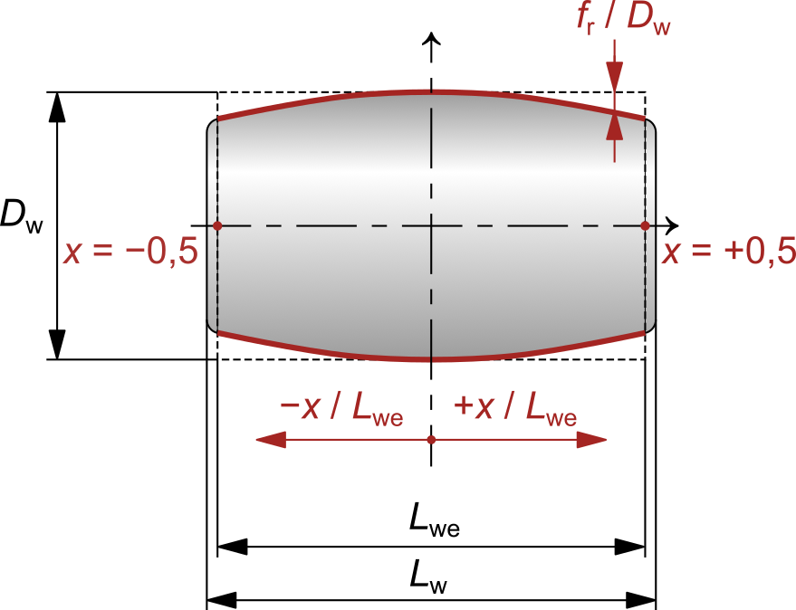

|
|
|


用户定义的滚子型线
滚子轴承通常使用 ISO 16281 中规定的对数型线。但如果需要，也可以使用用户定义的滚子型线。该文件的预期结构如下：
-- 这是一个注释
DATA
1 -0.45 0.000581256
2 -0.41 0.000390587
3 -0.37 0.000277616
4 -0.33 0.000200197
...
...
21 0.33 0.000200197
22 0.37 0.000277616
23 0.41 0.000390587
24 0.45 0.000581256
END
注意：
- 以“--”开头的行是注释，并被忽略。
- 型线函数定义以关键字"DATA"开始，以关键字"END"结束。
- 每行必须包含三列。第一列是索引，仅作为用户的参考来源，其值没有任何作用，会被忽略。第二列是无量纲位置 x/Lwe，型线在该位置处以 mm/mm 定义；本列的值应在 -0.5 到 +0.5 之间。第三列是无量纲型线 fr/Dw，单位为 mm/mm；本列的值不能超过 0.5。
- 如果型线未在整个滚动体宽度上定义，则这些区域的值将按二次外推确定。
- 为节省空间，'...' 所代表的数据已省略。

图 28.1：用于定义用户定义的滚子型线的坐标系
User-defined roller profile
A logarithmic profile as specified in ISO 16281 is usually used for roller bearings. However, a user-defined roller profile can be used instead, if required. The expected structure of this file is as follows:
-- This is a comment
DATA
1 -0.45 0.000581256
2 -0.41 0.000390587
3 -0.37 0.000277616
4 -0.33 0.000200197
...
...
21 0.33 0.000200197
22 0.37 0.000277616
23 0.41 0.000390587
24 0.45 0.000581256
END
Notes:
- Lines that start with "--" are comments and are ignored.
- The profile function definition starts with the keyword "DATA" and ends with the keyword "END".
- Each line must have three columns. The first column is the index. It is only included as a reference source for the user. Its values have no effect, and are ignored. The second column is the non-dimensional position x/Lwe for which the profile is defined in mm/mm. The values in this column should range between -0.5 and +0.5. The third column is the non-dimensional profile fr/Dw in mm/mm. The values in this column cannot exceed 0.5.
- If the profile is not defined over the entire rolling body width, the value is extrapolated quadratically for these areas.
- To save space, the data represented by "..." has been omitted.
Figure 28.1: Coordinate frame used to define the user-defined roller profile